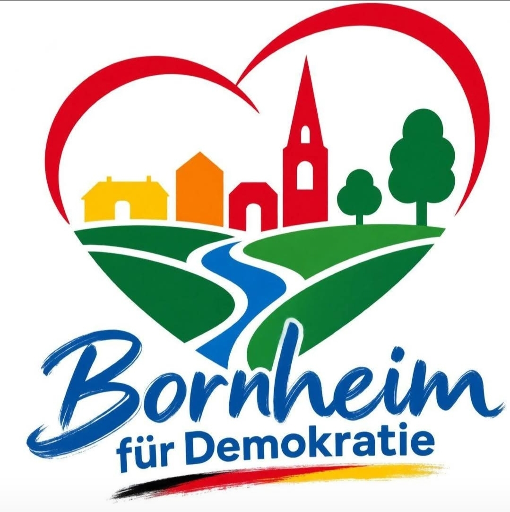

Gemeinsam für Vielfalt und Zusammenhalt
Wir engagieren uns für Demokratie, Menschenwürde und ein friedliches, vielfältiges Miteinander in Bornheim.
Wir sind eine Initiative engagierter Menschen, die sich für ein demokratisches und weltoffenes Bornheim einsetzen. Gemeinsam setzen wir Zeichen gegen Rechtsextremismus, Rassismus und Ausgrenzung.
Aktuelle Informationen zu unseren Aktionen und Veranstaltungen findet ihr auf unseren Social-Media-Kanälen.
Facebook: Den genauen Link zu eurer Seite ergänzen wir, sobald er vorliegt.
Schreibt uns gerne an kontakt@bornheim-fuer-demokratie.de.